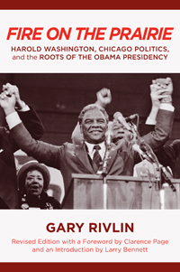

<body bgcolor="#FFFFFF" text="#000000" link="#0000FF" vlink="#CC0000" alink="#CC0000"><center><hr width="350" size="1" align="center" noshade>A revised edition of the classic story of race and power, set in Chicago during the 1980s, when this most political of cities elected its first black mayor<hr width="350" size="1" align="center" noshade><p><a href="https://cdcshoppingcart.uchicago.edu/Cart/ChicagoBook.aspx?ISBN=9781439904916&&PRESS=temple" target="_top">Buy this book!</a> | <a href="https://cdcshoppingcart.uchicago.edu/Cart/Cart.aspx?PRESS=temple" target="_top">View Cart</a> | <a href="https://cdcshoppingcart.uchicago.edu/Cart/Cart.aspx?PRESS=temple" target="_top">Check Out</a></p><p></p></center><!--none//--><h1>Fire on the Prairie</h1>
<H2>Harold Washington, Chicago Politics, and the Roots of the Obama Presidency</H2>
<H2>Revised Edition with a Foreword by Clarence Page and an Introduction by Larry Bennett
Photographs by Marc PoKempner</H2>
<h3>Gary Rivlin</h3>
<P>cloth 1-4399-0491-X $90.50, Oct 12, <FONT COLOR=#990033>Available</FONT>
<br>paper 1-4399-0492-8 $33.95, Oct 12, <FONT COLOR=#990033>Available</FONT>
<br>Electronic Book 1-4399-0493-6 $33.95 <FONT COLOR=#990033>Available</FONT>
<BR> 312 pp
6x9
8&nbsp;halftones
</P><BLOCKQUOTE><I>"Like Mike Royko�s </I>Boss: Richard J. Daley of Chicago<I>, Rivlin�s chronicle of Washington�s rise and power struggles has weathered the test of time as a classic Dickensian portrait of big city politics amid seismic racial, ethnic, and socioeconomic change."</I> <br>&#151<b>from the Foreword by Clarence Page</b></I></BLOCKQUOTE>
<p>Harold Washington's historic and improbable victory over the vaunted Chicago political machine shook up American politics. The election of the enigmatic yet engaging Washington led to his serving five tumultuous years as the city's first black mayor. He fashioned an uneasy but potent multiracial coalition that today still stands as a model for political change.
<p>In this revised edition of <i>Fire on the Prairie</i>, acclaimed reporter Gary Rivlin chronicles Washington's legacy&#8212;a tale rich in character and intrigue. He reveals the cronyism of Daley's government and Washington's rivalry with Jesse Jackson. Rivlin also shows how Washington's success inspired a young community organizer named Barack Obama to turn to the electoral arena as a vehicle for change. While the story of a single city, this political biography is anything but parochial.
<BR>&nbsp;<h2>Excerpt</h2><P>Excerpt available at <a href="http://www.temple.edu/tempress">www.temple.edu/tempress</a></p>
<BR>&nbsp;<h2>Reviews</h2>
<p>Praise for the first edition:
<p><i>"Colorfully, intimately, </i>Fire on the Prairie<i> shames and instructs as it entertains, weaving a skein of anecdotes and vignettes into a civic conversation about race and power."</i><br>&#151<b>Jim Sleeper</b>, <I>Washington Post Book World</I>
<p><i>"</i>Fire on the Prairie<i> is a master journalist�s fascinating chronicle of the Harold Washington mayorality elections and the intervening �Council War�. The book is rich in intriguing behind-the-scenes incidents. Rivlin makes the reader live those years."</i><br>&#151<b>Leon Despres</b>, <I>Chicago Sun-Times</I>
<BR>&nbsp;<h2>Contents</h2><P>
<p>Foreword to the Revised Edition by Clarence Page
<br>Introduction to the Revised Edition by Larry Bennett - <i>Forging Barack Obama: Harold Washington, Chicago, and the Politics of Race</i>
<br>Acknowledgments
<br>Prologue</p>
<p><b>BOOK I A Racial Thing, 1983</b>
<br>1. A Cry in the Wind
<br>2. The Conspirators
<br>3. The Chosen
<br>4. The Catalyst
<br>5. The Jesse Jackson Factor
<br>6. The Family Business
<br>7. The Liberal Apology
<br>8. A Tower of Babble
<br>9. A Racial Thing
<br>10. Positively Antebellum
<br>11. A City Divided</p>
<p><b>BOOK II Council Wars, 1983�1986</b>
<br>12. The Biggest Bully in the Bar
<br>13. Balancing Acts
<br>14. Beirut on the Lake
<br>15. Black Reform, White Reform
<br>16. The Chicago Experiment
<br>17. A Midterm Blunder
<br>18. The Continuing Saga of Clarence McClain</p>
<p><b>BOOK III Something Less Than Hate, 1986�1987</b>
<br>19. The Reckoning
<br>20. Any White Will Do
<br>21. Thy Kingdom at Hand
<br.22. The Empire Strikes Back</p>
<p>Note on Sources
<br>Index</p>
</P><BR>&nbsp;<H2>About the Author(s)</H2>
<P><b>Gary Rivlin</b> is the author of five books, including <i>Broke, USA: From Pawnshops to Poverty, Inc. � How the Working Poor Became Big Business</i>, and a former staff reporter for <i>The New York Times</i>, where his beats included Silicon Valley and New Orleans after Hurricane Katrina. His work has appeared in <i>The New York Times Magazine</i>, <i>GQ</i>, <i>Wired</i>, and <i>Fortune</i>, among other publications, and also the <i>Chicago Reader</i>, where he worked as a staff writer during the Harold Washington years.</P>
<BR><H2>Subject Categories</H2>
<p><A HREF="/tempress/political.html" TARGET="_top">Political Science and Public Policy</a>
<BR><A HREF="/tempress/race.html" TARGET="_top">Race and Ethnicity</a>
<BR><A HREF="/tempress/urban.html" TARGET="_top">Urban Studies</a>
</p>
<BR><h2 class="inpageheading">In the series</H2>
<P><I><a href="http://www.temple.edu/tempress/urban_life.html" onMouseOver="window.status='Click for other books in this series!'; return true;" onMouseOut="window.status=''; return true;" target="_top">Urban Life, Landscape, and Policy</a></i>, edited by Zane L. Miller, David Stradling, and Larry Bennett.
</p><p><i>Urban Life, Landscape, and Policy Series</i>, edited by Zane L. Miller, David Stradling, and Larry Bennett, features books that examine past and contemporary cities, focusing on cultural and social issues. The editors seek proposals that analyze processes of urban change relevant to the future of cities and their metropolitan regions, and that examine urban and regional planning, environmental issues, and urban policy studies, thus contributing to ongoing debates.</p>
<p align="center"><a href="https://cdcshoppingcart.uchicago.edu/Cart/ChicagoBook.aspx?ISBN=9781439904916&&PRESS=temple" target="_top">Buy this book!</a> | <a href="https://cdcshoppingcart.uchicago.edu/Cart/Cart.aspx?PRESS=temple" target="_top">View Cart</a> | <a href="https://cdcshoppingcart.uchicago.edu/Cart/Cart.aspx?PRESS=temple" target="_top">Check Out</a></p><p><font face="Arial" size="1"><a href="copyright.html" onMouseOver="window.status='Web Copyright Policy';return true;" onMouseOut="window.status=''" title="Web Copyright Policy">&copy;</a> 2015 <a href="http://www.temple.edu" target="new" onMouseOver="window.status='Link to Temple University home page';return true;" onMouseOut="window.status=''" title="Link to Temple University home page">Temple University</a>. All Rights Reserved. http://www.temple.edu/tempress/titles/2129_reg.html</font></p>